ЛАБОРАТОРНО-ПРАКТИЧНА РОБОТА
Тема: «Плоско-рельєфне різьблення та його різновиди»
Мета: ознайомлення з плоско-рельєфним різьбленням, його різновидами; з техніками виконання плоско-рельєфного різьблення; з правилами організації робочого місця для різьблення; з матеріалами для роботи, інструментом для різьблення та його виготовленням, заточкою, правкою, зберіганням.
Матеріали та інструменти: набір інструментів для об'ємного різьблення, заточний і креслярський інструмент.
Порядок виконання роботи:
- Ознайомитись з теоретичними відомостями.
- Підготувати виріб до оздоблення плоско-рельєфним різьбленням.
- Заточити і направити інструмент.
- Ознайомитись з техніками виконання плоско-рельєфного різьблення на основі виготовлення тренувальних дощечок.
Теоретичні відомості:
Плоско-рельєфне різьблення широко використовується при прикрашанні будинків. Отримуване зображення знаходиться на одній площині, а рельєф різьблення різний по малюнку і композиції виявляється шляхом вибору або поглиблення фону навколо якого-небудь елементу різьблення або орнаменту (мал. 1).
Такий вид різьблення дає можливість різьбяреві виконувати різні композиції з рослинними орнаментами, зображеннями тварин, птахів і людини. Проте техніка різьблення досить трудомістка, вимагає певної майстерності і досвіду, а також наявності різноманітного різацького інструменту.
Плоско-рельєфне різьблення має декілька різновидів (мал. 2): із заоваленим контуром, з фоном подушки і з підібраним (вибраним) фоном.
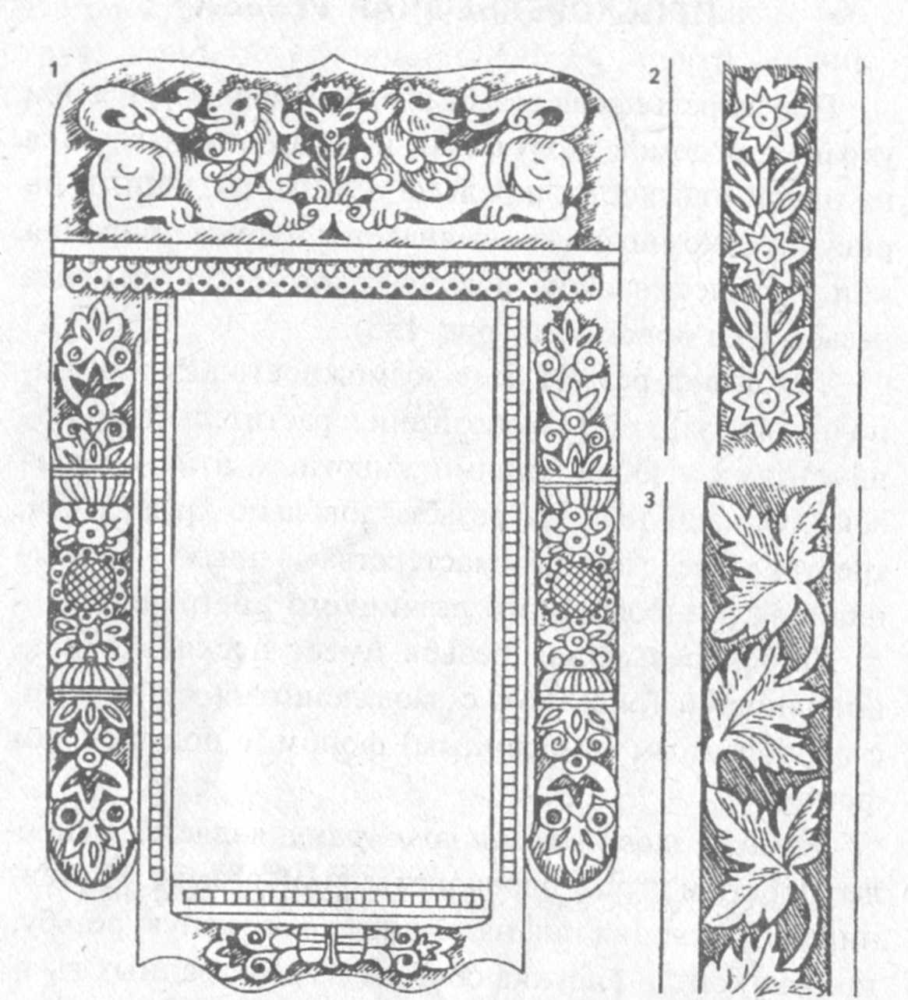
Мал. 1. Плоско-рельєфнерізьблення:
1 — лиштва; 2,3 — орнаментальні смуги; 4 — панно
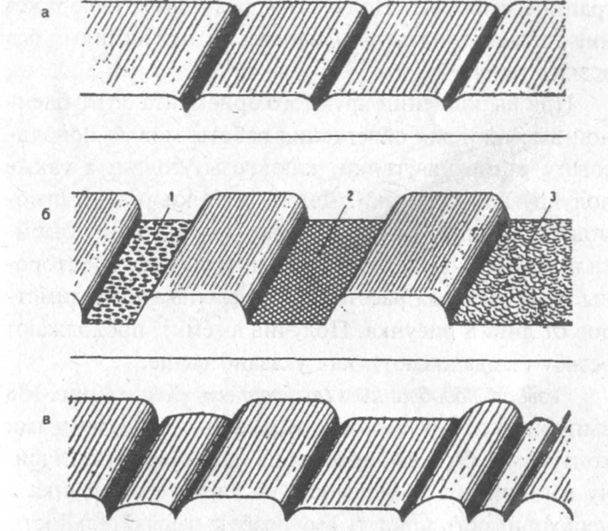
Мал. 2. Різновиди плоско-рельєфного різьблення:
а — із заоваленим контуром; б — з підібраним (вибраним) фоном (1 — чеканка фону; 2 — різання кутиком; 3 — різання напівкруглими стамесками); в — з фоном подушки.
Плоско-рельєфне різьблення із заоваленими контурами є найбільш простим видом плоско-рельєфного різьблення. По техніці виконання вона нагадує контурне різьблення, оскільки контур малюнка складається з двогранних виїмок. Процес різьблення починається з надрізу по контуру малюнка (мал. 3). Надріз може бути зроблений косяком або краєм пологої стамески майже вертикально, потім слідує підрізування з боку фону. Для роботи підбирають такі стамески, щоб можна було надрізати і підрізати криволінійні форми орнаменту одним рухом по напряму волокон деревини.
Після підрізування приступають до заокруглення граней з боку елементу орнаменту з таким розрахунком, щоб ця грань закруглювалася крутіше, ніж підрізування на межі з фоном. Виходить рельєфне зображення з плавними м'якими заокругленими лініями без різких тіней.
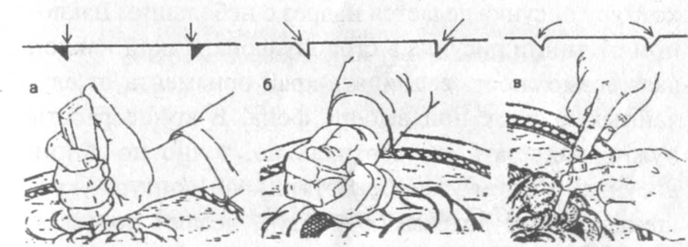
Мал. 3. Техніка виконання плоско-рельєфного різьблення із заоваленими контурами (стрілками показаний напрям руху інструменту):
а — надрізання; б — підрізування; в — заокруглення контуру орнаменту.
При виконанні крупного орнаменту з поглибленою виїмкою для полегшення роботи можна використовувати стамески-куточки, клюкарзи-куточки, а також напівкруглі стамески. Робити виїмки можна за допомогою киянки, направляючи стамеску ударами. Виїмка в цьому випадку повинна проходити із зовнішньої сторони орнаменту на відстані декілька міліметрів від лінії малюнка. Отримавши виїмку, продовжують різьблення (заокруглюють), як вказано вище.
Плоско-рельєфне різьблення з фоном подушки відрізняється від попередніх видів тим, що фон ніде не залишається плоским. Малюнок заокруглюють круто з боку контуру і полого – з боку фону, який формою нагадує подушку.
У техніці плоско-рельєфного різьблення фон подушки робить зображення більш насиченим, (мал. 4), а різьблення із заокругленими контурами виглядає строго, графічно.
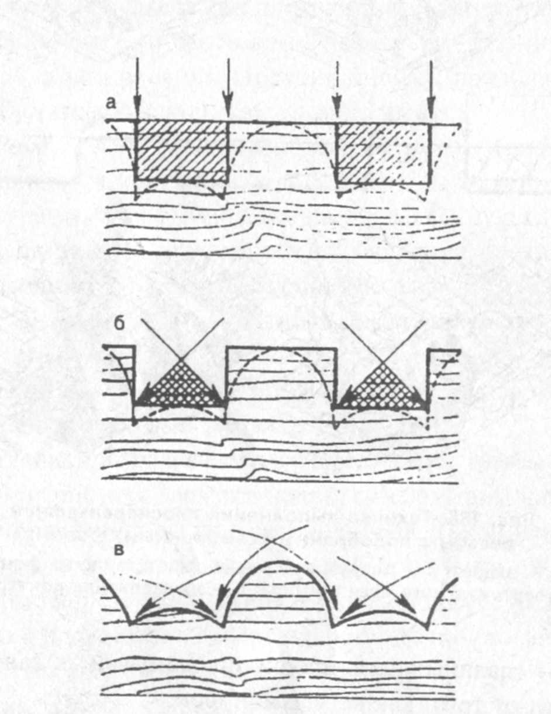
Мал. 4. Техніка виконання плоско-рельєфного різьблення з фоном подушки (стрілками показаний напрям руху інструменту):
а — надріз по контуру; б — підрізування до вершини фону; в — заокруглення фону і контуру орнаменту.
Плоско-рельєфне різьблення з підібраним (вибраним) фоном (мал. 5) виконується так само, як і різьблення із заоваленими контурами. Фон вибирається на певну глибину і ширину залежно від характеру малюнка і необхідності додати йому особливої виразності. Фон усередині можна заповнити також профільним різанням або закарбувати. Це зробить різьблене зображення ще оригінальнішим і створить певний зоровий ефект.
Техніка виконання плоско-рельєфного різьблення. По контуру малюнка робиться надріз з невеликим нахилом від лінії малюнка у бік фону. Такий нахил дає можливість захистити край орнаменту від випадкового різання при виборі фону.
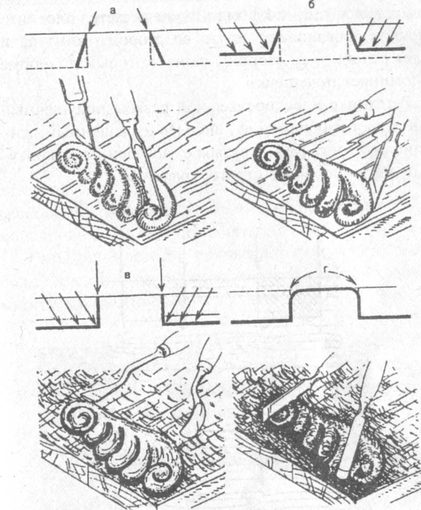
Мал. 5. Техніка виконання плоско-рельєфного різьблення з підібраним (вибраним) фоном:а - надрізання; б - підрізування; в - вибірка і зачистка фону і вертикального краю контуру; г - заокруглення контуру.
В кінці роботи потрібно надрізати його вертикально, точно по лінії малюнка, а потім вже обробити край контуру прикраси. Після надрізанняпо контуру роблять підрізування,його виконують на задану глибину, однакову по всій площині орнаменту. Після підрізування приступають до вибірки фону прямими, напівкруглими, пологими стамесками або стамесками-клюкарзами, гладкими або профільними, в залежності від того, який задуманий фон.
При зачищенні фону важливо враховувати напрям волокон деревини, щоб не було задирок. Різьблення по твердих породах виконують за допомогою киянки.
Плоско-рельєфне різьблення з вибраним, підібраним фоном
Відрізняється від інших видів тим, що навколо контуру малюнка вибирають поглиблення, внаслідок чого зображення підноситься над фоном на різну висоту (зазвичай на 5-7 мм) залежно від задуму, заготовки і інших особливостей.
Прикладом плоско-рельєфного різьблення з вибраним фоном служать вироби Кудринського різьблення.
Плоско-рельєфне різьблення з вибраним фоном в одному виробі часто переходить в рельєфну тому чітких визначень давати не варто, оскільки найчастіше використовуються комбіновані види різьблення. При складанні малюнка композиції слід добре продумати майбутнє зображення в місцях перетину елементів рослинного орнаменту, а також сполучення окремих частин фігур людей і тварин на різних рівнях; і чим їх більше, тим складніше все передбачити і уявити в об'ємі готове зображення. Для виконання подібної роботи потрібні навики, які закріплюються з часом при виготовленні виробів з поступовим підбором складності.
Вибір фону починають з надрізування контуру малюнка ножем-косяком або ножем з довгим лезом, з нахилом 60-85° до площини виробу. Кінчик ножа-косяка має бути направлений від малюнка. Надрізавши контур малюнка по всьому периметру, приступають до підбору фону, який виконують різними інструментами: ножем-косяком або напівкруглими і плоскими стамесками. Зачищають і вирівнюють фон плоскими стамесками або клюкарзами і ножем-косяком.
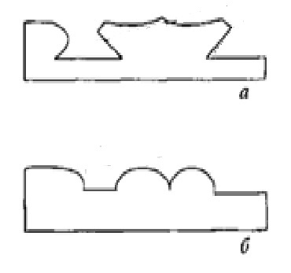
Мал. 6.Орнаменти з підрізаним (а) і заоваленим (б) фонами.
Вибирати фон слід акуратно, щоб не пошкодити край орнаменту. Повністю вибравши фон, переходять до опрацювання форм малюнка - переплетень рослинного орнаменту і деталей фігур.
Різьблення з підібраним фоном відрізняється від різьблення з вибраним фоном тим, що в першому випадку матеріал частково видаляють з-під орнаменту, що підноситься над фоном, під певним кутом.
Краї орнаменту можуть бути заовалені або підрізані (підібрані), як показано на мал. 6.
Фон обробляють по-різному. Його можна зробити рівним і гладким, що вимагає ретельної обробки, або обробити чеканом або пуансоном. З цією ж метою можна використовувати бор від бормашини. Фон можна залишити і із слідами (різання) обробки від напівкруглої стамески.
Деревина для різьблення
Для виконання різьблених робіт самим підходящим матеріалом є липа. Цей м'який, пластичний і доступний матеріал незамінний для дрібного і ювелірного різьблення.
З числа м'яких листяних порід близькими по якостях до липи є вільха, осика і тополя. Проте їх відмінності від липи при різьбленні вельми відчутні. Вільха, наприклад, під різцем більше сколюється і кришиться, а при роботі з осикою і тополею інструмент починає в'язнути.
М'які хвойні породи мають особливості, які не можуть бути використані як переваги в дрібному плоско-рельєфному і рельєфному різьбленні. Яскраво виражена текстура сама по собі є прикрасою виробів і зводить нанівець переваги витонченого різьблення, яке виглядає як брижі на тлі текстури.
При різьбленні по хвойних породах із-за різної щільності самих шарів (ранньої і пізньої деревини) і смолистості деревини плавно і рівномірно вести ріжучий інструмент досить складно.
Хвойні породи традиційно використовують в крупних, монументальних роботах.
З досвідом роботи по деревині з'являється і навик в її виборі.
При виборі заготовок з липи необхідно знати наступне:
- деревина має бути рівномірно біло-рожевого кольору без зеленуватих і сіруватих смуг; останнє свідчить про ранню стадію загнивання деревини;
- яскрава текстура у липи часто є ознакою дуже рихлої деревини;
- переважна деревина комлевої (нижньої) частини стовбура;
- деревина молодих дерев, як правило, більш рихла;
- при купівлі заготовок слід звертати увагу на її внутрішні поверхні. Велика кількість вибоїн і шороховатостей найчастіше говорить не про погане заточування інструменту, а про рихлу деревину.
Заготівля деревини
Заготовляти деревину для різьблення краще взимку, коли в ній менше соку. Якщо є можливість залишити дерево на місці спилювання, то можна скористатися народним методом сушіння. Для цього дерево спилюють навесні при появі перших листочків і залишають повністю з гілками і корою на все літо до перших заморозків. Під стовбур на землю підкладають чурбак, а торець в місці зрізу покривають різними мастилами, оліфою, лаками, масляною фарбою і тому подібне.
При будь-якій заготівлі деревини слід обов'язково дотримуватись деяких правил:
- торці стовбурів дерев відразу після спилювання слід обробити водо і повітронепроникними розчинами (фарбами, лаками, оліфою), інакше тріщини і бактерії зіпсують заготовлений матеріал, або значну його частину. Слід зазначити, що якщо не замазати торці плодових дерев відразу після спилювання, то заготовка може розтріскатися за декілька годин;
- стовбур дерева можна розпиляти на чурбаки різної величини. При цьому необхідно враховувати припуск до розміру майбутнього виробу - 15-20 см з обох боків чурбака на можливі тріщини;
- якщо деревина планується використовуватись в дрібних виробах, то чурбак слід розколоти на окрайці або розпиляти на дошки. Так деревина висохне значно швидше;
- зберігати чурбаки, дошки слід в сухому, провітрюваному приміщенні (не на протязі) подалі від опалювальних приладів. Щойно розпиляні дошки, як правило, сушать в штабелях, проклавши між ними рейки і бруски, щоб їх поверхні не стикалися одна з одною. В тому випадку, якщо цього не зробити, то вони позеленіють, потемніють і загниють;
- деревина темніє, якщо її зберігати поряд з металом.
У дошках і окрайцях деревина липи висихає до необхідної для різьблення вологості за півроку, в чурбаках – за 1-2 роки залежно від розмірів, умов зберігання, періоду заготовки, щільності деревини і інших чинників.
Тверді породи сохнуть до необхідної вологості при природному сушінні дуже довго. Дуб, наприклад, до 7 років в чурбаках. Іноді заготовки з нього вимочують декілька років у воді, в цьому випадку його називають мореним дубом.
Виробничу сушку деревини проводять в лісосушильних камерах, в електричному колі струмів високої частоти, в гідрофобних рідинах (маслах, масляних антисептиках, парафіні).
Проте при сушінні деревини в рідинах вона просочується останньою, що буває вельми небажано, наприклад, для столярних і токарних робіт. Цей спосіб годиться для скульптурних робіт і домашнього начиння.
Якщо необхідно висушити матеріал за мінімально короткий термін, можна використовувати наступні народні способи.
Перший спосіб.
В умовах міської квартири свіжозрізану дошку слід обернути в 5-15 шарів паперу і покласти в целофановий пакет з невеликими отворами по всій його поверхні. Дошку або заготовку в пакеті кладуть на батарею центрального опалювання або на сонці.
Для дощечки завтовшки 2-3 см досить декілька днів, щоб вона стала придатною до роботи. Папір треба змінювати кілька разів в день, а дощечку перевертати з одного боку на інший. Недолік цього способу в тому, що дошки при сушці коробляться, але цей дефект можна усунути струганням.
Другий спосіб .
Заготовки випаровують або виварюють у воді протягом 3-4 годин. Деревина при цьому помітно рожевіє, стає пластичною і м'якою. Поки деревина волога (після виварювання), вона легко обробляється. Такий спосіб хороший, якщо необхідно зробити довбане хатнє начиння або дрібний виріб, але працювати доведеться швидко, не більше 2-3 днів. Проте якщо для виготовлення виробу необхідний триваліший період часу, потрібно пам'ятати, що деревина може повністю висохнути і стати тьмяною і твердою.
Виварений чурбак або окраєць обробляють рівномірно по всій поверхні так, щоб не було великої різниці в товщині заготовки.
Якщо потрібно зробити перерву в роботі, то виріб поміщають в целофановий пакет зі стружкою або вологою соломою і зав'язують. Але більш ніж на добу так залишати виріб не можна – він почне пліснявіти. Якщо залишити нерівномірно оброблену заготовку на відкритому повітрі, вона висохне і може розтріскатись і стати твердою.
По дуже сирій або свіжозрізаній деревині різати не можна, оскільки деревна волога не дозволяє зробити чистий зріз, заготовка сильно скрипить, мнеться і ріжеться з великим зусиллям. Інструмент йде нерівномірно, зісковзує і тупиться.
Після сушки на вулиці деревина має вологість 18-25 %, ріжеться легко, менше сколюється. Це в основному відноситься до таких порід, як липа і вільха. Деревина, що зберігається в домашніх умовах, має вологість 8-15 % і іноді вимагає зволоження. Але треба пам'ятати, що осика при зволоженні стає більш в'язкою, береза може сильно покоробитися і дати тріщини. Тверді породи для різьблення не зволожують через можливість розтріскування після висихання виробу.
Характеристика деревини різної вологості подана в табл. 1.
Таблиця 1
| Характеристика деревини різного ступеня вологості | |
|---|---|
| Стан деревини | Відмітні особливості |
| Свіжозрізана | Важка, при різьбленні скрипить, мне, волокна рветься, зріз ворсистий |
| Перезволожена | Важка, при різьбленні на місці зрізу виступає волога, зріз ворсистий |
| Необхідної вологості (15-30%) | Пластична, ріжеться легко, зріз чистий, стружка не кришиться |
| Пересушена | При різьбленні упоперек волокон стружка сильно кришиться, легко сколюється навіть при акуратному користуванні |
Необхідно відзначити, що всі ознаки, наведені в таблиці, характерні в основному для липи і вільхи за умови дотримання рекомендацій за технологією різьблення і використання правильно заточеного, гострого інструменту.
Характеристика основних і допоміжних інструментів для різьблення
Стамеска – використовують для різьблення по дереву, кістці, рогу. Складається з металевого полотна, посадженого на дерев'яну ручку. Залежно від профілю полотна може бути крута, полога, пряма, куточок і церазик.
Круті або напівкруглі – це стамески, профіль полотна яких складає 1 /2 кола (мал. 7).
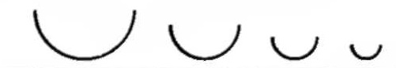
Мал. 7. Пологі або напівпласкі – це
стамески, профіль полотна яких складає менше 1/2 кола, тобто 1/3, 1/4, 1/5
і т. д. (мал. 8).
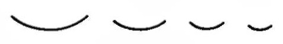
Мал. 8. Прямі це стамески з прямим профілем (мал. 9).
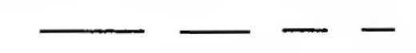
Мал. 9. Кутики це стамески, профіль полотна яких має вид куточків (мал. 10).
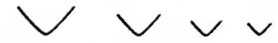
Мал. 10.Церазики– це стамески маленької ширини 1-3 мм з профілем у вигляді частини еліпса (мал. 11).
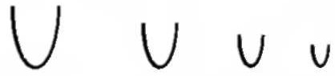
Мал. 11.Клюкарза– інструмент різьбяра, що складається з металевого зігнутого полотна, насадженого на дерев'яну ручку. Профілі полотен можуть бути ті ж, що і у звичайних стамесок.
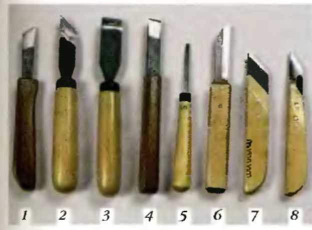
Мал. 12 Стамески прямі зі скосом (1, 2), прямі вузькі і широкі (3-5).
Ножі: Богородський (6), зі скосом 45 0 (7) і ніж-косяк зі скосом 35 0 (8).
Ніж-косяк – інструмент різьбяра, що складається з прямого полотна зі скосом краю, насадженого на дерев'яну ручку. Заточений з боку скосу.
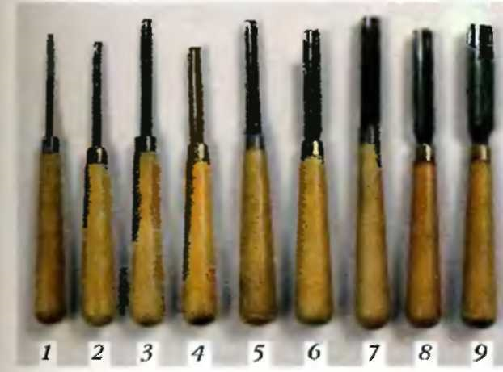
Мал. 13. Стамески півкруглі круті шириною від 2, 3, 4, 5, 6, 7, 8, 10, 12 мм.
Основний інструмент
Тим, хто вирішив зайнятись різьбленням надовго і серйозно, буде потрібно мати наступний інструмент:
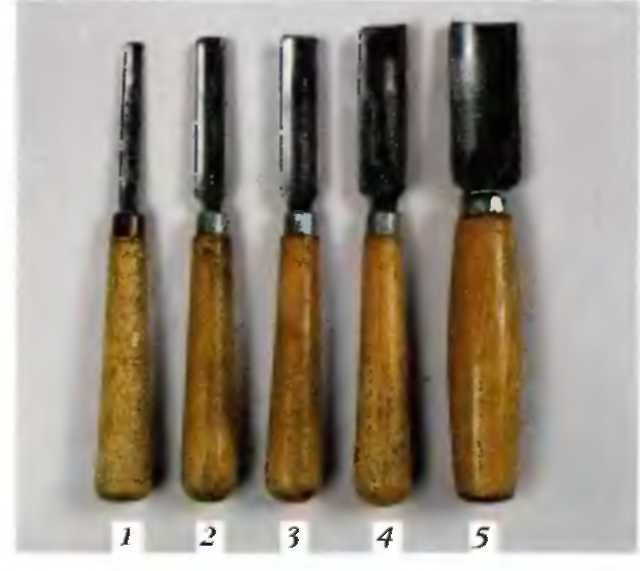
Мал. 14. Стамески відлогі (півкруглі) вузькі 4-7 мм (1); і широкі 10-12 мм (2); 18 мм (3); 20 мм (4); 25 мм (5).
- ніж-косяк зі скосом 35 0 (мал.12);
- стамески прямі, вузькі і широкі 4-6, 10, 18 мм (мал. 12);
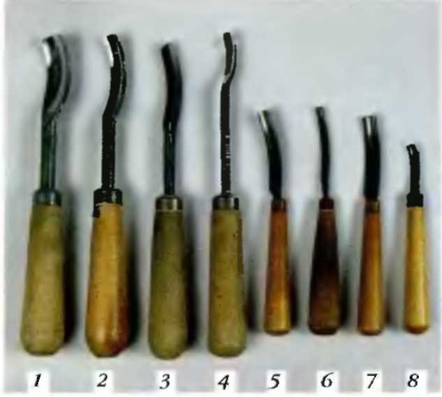
Мал. 15. Клюкарзи: відлогі 1, 2, 4, кутик (3) півкруглі круті (5-8).
- стамески круті, напівкруглі шириною 2, 3, 4, 5, 6, 7, 8, 10-12 мм (мал. 13);
- стамески відлогі (напівпласкі): широкі 10-12, 18, 20-25 мм: вузькі 4-7 мм (мал. 14);
- стамески-кутики або клюкарзи-кутики (мал. 15);
- клюкарзи: напівкруглі круті 5, 7, 8-10 мм; пологі (напівпласкі) 4-6,10-12, 18-20 мм (мал. 15);
- клюкарзи прямі 10-12 мм (5-8) (мал. 16);
- стамески-церазики або клюкарзи-церазики (мал. 16).
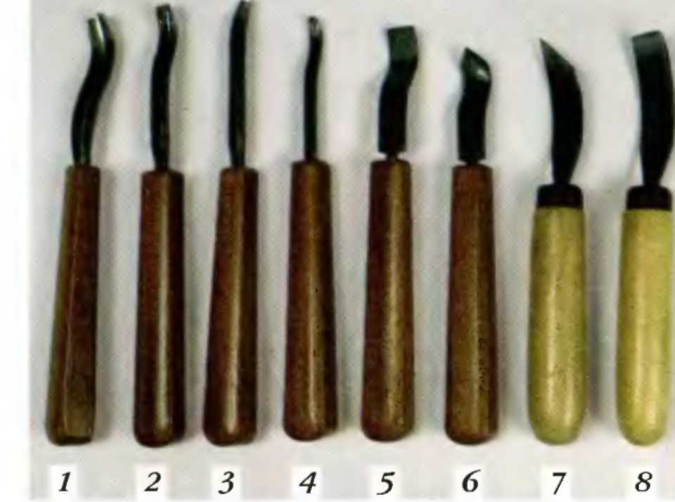
Мал. 16. Клюкарзи: круті з різним загином шиї полотна (1, 2);
крута зворотна (3); церазик (4) прямі зі скосом полотна (5-8).
Стамески прямі зі скосом використовують так само, як просто прямі. На відміну від ножа-косяка у стамески одностороннє заточування.
Для початку достатнього мати ніж-косяк із заточуванням під кут 45°, напівкруглу круту стамеску шириною 5-7 мм і пологу (напівпласку) стамеску шириною 12-18 мм. Маючи ці інструменти, можна виконати достатньо складні роботи.
Стамески, клюкарзи, ножі-косяки, церазики самостійно виготовити досить складно. Для цього потрібний ряд спеціальних пристосувань. До того ж провести необхідне гартування для інструменту з легованої і швидкорізальної сталі в домашніх умовах неможливо. Інструмент зараз можна придбати в художніх салонах, господарських магазинах, на ринках або замовити в майстернях (мал. 17). Після придбання напівкруглих, крутих і пологих стамесок
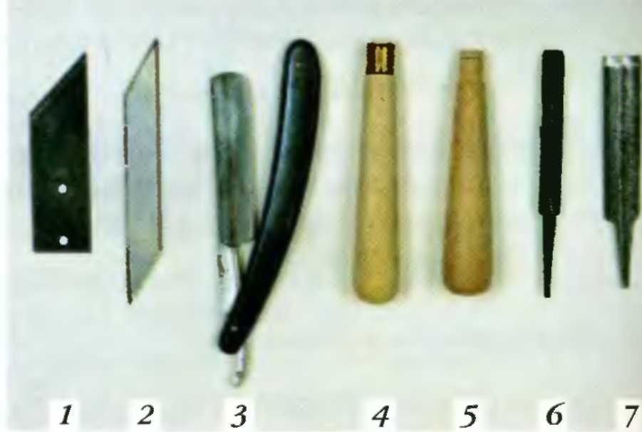
Мал. 17. Полотна ножів-косяків (1,2), небезпечна бритва (3),
дерев’яні ручки (4,5), полотна стамесок (6,7).
необхідно перевірити правильність їх профілів. Роблять це так: стамеску ставлять строго вертикально до площини дошки і провертають її навколо своєї осі. Слід від стамески з правильним профілем є рівним колом. Інструмент буває упродажі без рукоятки,
її слід насадити на нього до заточування.
Заточування інструменту для різьблення
Інструмент зазвичай продається не заточеним або неправильно заточеним. Для різьблення по м'яких породах деревини заточування має бути тонким, а інструмент – відшліфований (правлений) до дзеркального блиску. Для заточування вручну знадобляться бруски шліфувальні або шліфувальні шкірки середньої і мілкої зернистості. Для шліфування (правки) необхідно брусок з нанесеною на нього пастою ГОЇ. Брусок – дерев'яний брусок, обклеєний тонкою натуральною шкірою.
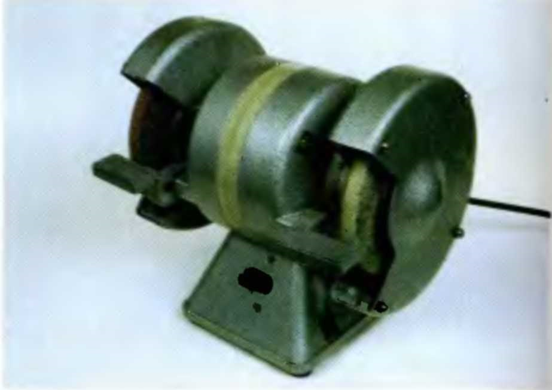
Мал. 18. Електроточило.
Заточування інструменту можна проводити на електроточилі (мал. 18), але це вимагає певних навичок, особливо якщо воно має дуже велику потужність. Для початківців достатньо саморобного, з двигунів 2000-2700 обертів за хвилину і потужністю 60 Вт (мал. 18).
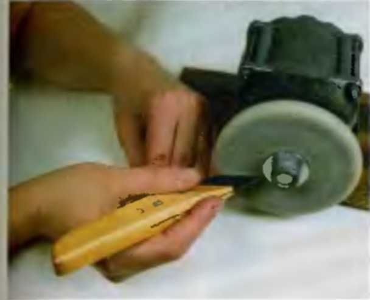
Мал. 19. Вирівнювання кромки ножа на точилі.
Спочатку проводять торцювання і вирівнювання кромки інструменту. Це можна зробити, використовуючи електроточило (мал. 18) або вручну на шліфувальній шкірці (мал. 20).
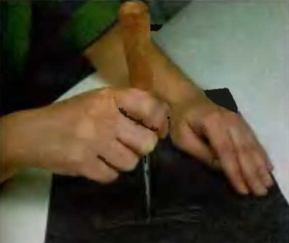
Мал. 20. Вирівнювання кромки ножа на шліфувальній шкірці.
Потім приступають до формування 1-ої (фаски)під кутом 45°. Цю операцію проводять також за допомогою жорна або шліфувальної шкірки.
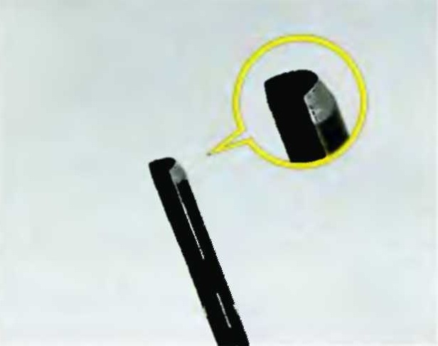
Мал. 21. Вид стамески після формування 1-ої фаски під кутом в 45°.
Після формування 1-ої фаски під кутом в 45°грубе заточування виглядає таким чином (мал. 21).
У продажу буває інструмент вже із знятою 1-ою фаскою, тоді відпадає потреба у вищеописаних операціях торцювання і зняття фаски під кутом 45°.
Найвідповідальнішою операцією при заточуванні інструменту є зняття 2-ої фаски під кутом 15-25° (мал. 22).
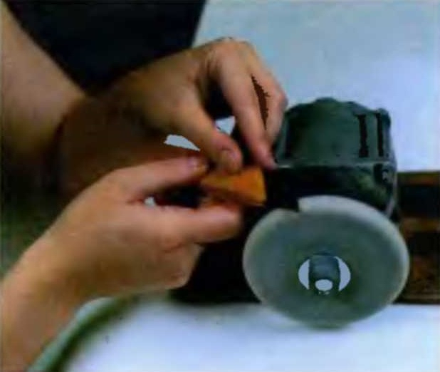
Мал. 22. Формування 2-ої фаски під кутом 15-25°.
Абразивний круг може обертатися як назустріч до майстра, так і від нього. Під час заточування стамеску слід рівномірно обертати навколо власної осі. Щоб уникнути перегартовування, інструмент необхідно періодично опускати в ємність з водою (мал. 23).
Ніж-косяк слід заточувати від кінчика ножа до п'яти. На кінчику ножа, як правило, затримується крапля води, за якою слід спостерігати при заточуванні. Як тільки крапля почне закипати, заточування інструменту припиняють і охолоджують його на повітрі або у воді. При появі задирки на кромці стамески або ножа-косяка заточування на жорні припиняють і продовжують вручну на
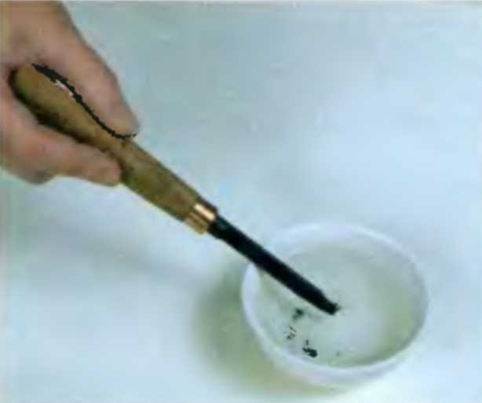
Мал. 23. Охолодження інструменту в процесі заточування .
шліфувальній шкірці (мал. 24) або бруску (мал. 25), заздалегідь змоченому у воді.
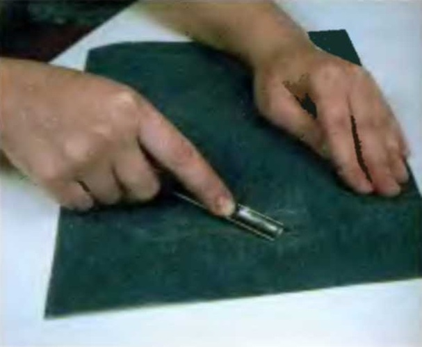
Мал. 24. Заточування інструменту на шліфувальному папері
після формування другої фаски.
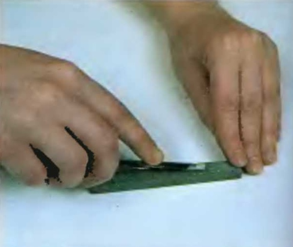
Мал. 25. Заточування інструменту на бруску після формування другої фаски.
Ширина 2-ої фаски має бути близько 10 мм при товщині металу 1-1,5 мм і довжині металевої частини від ручки до ріжучої кромки 8-12 см (мал. 26).
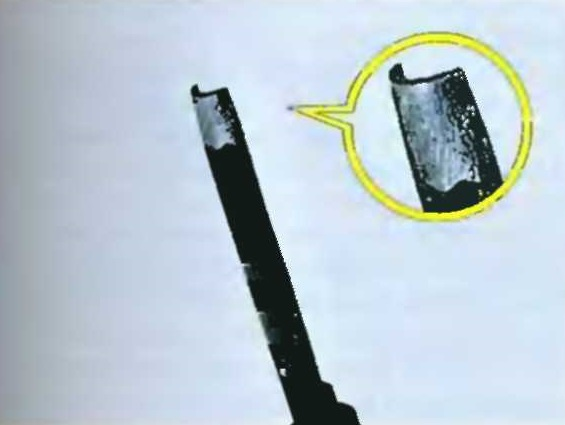
Мал. 26. Вид стамески після формування другої фаски.
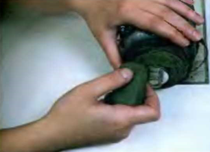
Мал. 27. Нанесення пасти ГОЇ на круг.
Після всіх операцій заточування обов'язкова правка (шліфування) інструменту на бруску або повстяному крузі з нанесеною пастою Г0І (мал. 27).
Повстяний круг повинен обертатися за годинниковою стрілкою (мал. 28).
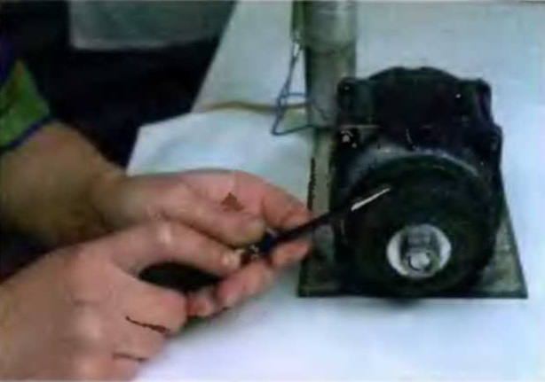
Мал. 28. Правка інструменту.
Після правки фаска повинна мати дзеркальну поверхню (мал. 29).
Гостроту інструменту перевіряють наступним чином: роблять зріз заточеним інструментом упоперек волокон деревини. На зрізі, залишеному інструментом, в даному випадку стамескою, не повинно бути смуг і задирок. Інструмент повинен легко і гладко зрізати матеріал (мал. 30).
Найвідповідальнішою перевіркою для інструменту є зріз по торцю деревини. На зрізі не повинно бути зминання деревини.
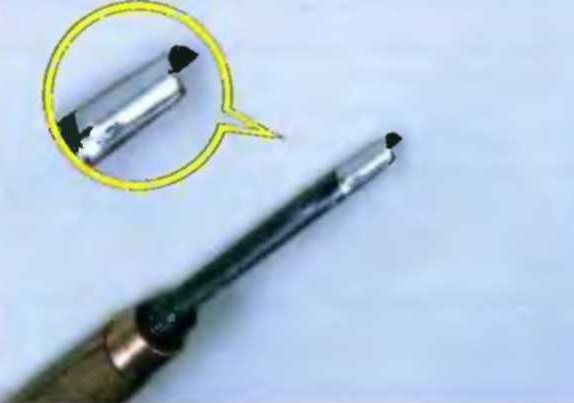
Мал. 29. Вид стамески після шліфування.
Для тих, хто має можливість самостійно виготовити інструмент, коротко розглянемо марки сталей, з яких його роблять.
Сталі поділяють на вуглецеві, леговані і швидкорізальні. Кожна з них, у свою чергу, має багато різновидів залежно від змісту вуглецю або інших домішок, поліпшуючих певні якості. Для виготовлення інструменту різьбяра підходять вуглецеві сталі марок У10; У12; У10а;
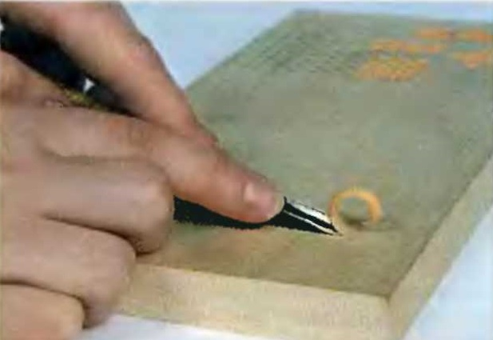
Мал. 30. Зріз впоперек волокон деревини.
У12а, всі леговані сталі, окрім дуже твердих (Хв5; Х12; Х12м), а також швидкорізальні сталі марок Р18, Р9.
Проте потрібно відзначити, що в домашніх умовах провести гартування інструменту можна тільки з вуглецевої сталі. Леговані і швидкорізальні сталі гартують при дуже високих температурах, недоступних в домашні умовах.
Можливі пороки інструменту, матеріалу і помилки різьбяра подані в таблиці 2.
Таблиця 2.
| Складнощі, що виникають при різьбленні | Причини виникнення пороку | Способи усунення |
|---|---|---|
| Інструмент не захвачує матеріал під рекомендованим кутом до площини заготовки | Неправильний кут заточування інструменту | Зменшити кут заточування (збільшити фаску) |
| Заовалена фаска в процесі правки | Інструмент переточити | |
| Інструмент входить в матеріал з великим зусиллям, зріз шорсткий | Інструмент недостатньо зашліфований | Правити набруску з нанесеною пастою ГОІ |
| Смуги і сліди на всьому протязі зрізу, повторюються при кожному різанні | Задирка на ріжучій кромці інструменту | Видалити задирки правкою на бруску |
| Метал викришився на ріжучій кромці інструменту | Вишліфувати на дрібнозернистій шкірці, трохи знімаючи кромку, потім зашліфувати | |
| Сколення при різьбленні вздовж волокон (інструмент сколює деревину перед зрізанням) | Великий кут заточування інструмента | Інструмент переточити, зменшити кут заточування |
| Дуже різкі, швидкі рухи інструмента | Інструмент вести повільно, притискуючи до матеріалу | |
| Інструмент швидко тупиться (не тримає жало) | Маленький кут заточки | Інструмент переточити, збільшити кут заточування |
| Метал недогартований | Інструмент загартувати і заточити | |
| Ріжуча кромка інструмента кришиться | Неправильне володіння інструментом | Не змінювати різко кут різання при знаходженні інструмента в матеріалі |
| Інструмент перегартуваний | Інструмент відпустити або сточити перегартовану ділянку | |
| Інструмент виготовлений з невідповідної марки сталі | Інструмент замінити | |
| Інструмент мне деревину на окремій ділянці заготовки | Порок деревини (дуже рихла або гнила) | Уражену ділянку видалити, зробити канавку |
| Інструмент сколює деревину на окремих ділянках заготовки | Малюнок нанесений без урахування розташування волокон деревини | Змінити розташування малюнка на заготівці |
| Дуже різкі рухи інструмента | Інструмент вести повільно, притискуючи щільно до заготівки | |
| Інструмент погано ріже по торцевому зрізу деревини | Інструмент недостатньо гострий | Підправити на бруску з пастою ГОІ |
| Деревина при різьбленні сильно кришиться | Деревина пересушена | Зволожити поверхню деревини |
| Деревина пошкоджена тріщинами і порізами | Видалити пошкоджений шар струганням | |
| Сколення, тріщини при зміні напряму інструмента | Інструмент недостатньо зашліфований | Правити на дрібнозернистій шкірці або бруску |
Необхідно знати, що не варто підчищати різьблення наждачним папером, дряпати ножем, піднімати деревину стамескою, як лопатою. Все це погіршує якість виробу.
Допоміжні інструменти та приладдя
У своїй роботі різьбярі досить часто використовують допоміжні інструменти та приладдя (мал. 31 і 32), з якого найнеобхіднішими є олівці різної твердості, калька олівцева, лінійки і косинці (металеві або столярні, які зручніші), гумка, циркуль, кнопки і скріпки, копіювальний папір (для зняття копій малюнків), щітки і пензлі щетинні (для покриття виробів воском і лаком) та інші.
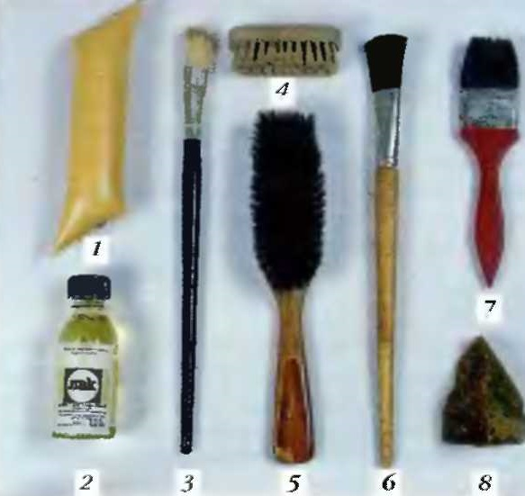
Мал. 31. Необхідні пристосування: мастика воскова (1), лак (2),
кісточки (3, 6, 7), щітки (4, 5), віск (8).
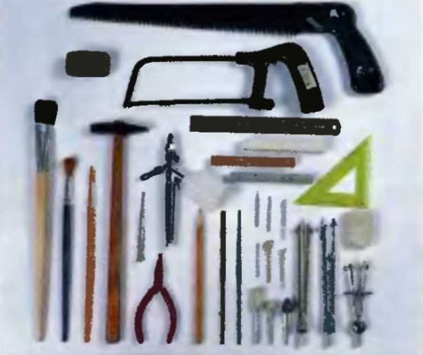
Мал. 32. Допоміжні інструменти.
Підготовка до роботи. Перенесення малюнка
При переведенні малюнка на поверхню виробу краще не користуватися копіювальним папером, оскільки сліди від нього погано стираються гумкою, а перевести малюнок точно і повністю вдається не завжди.
Переведення малюнка за допомогою олівцевої кальки має ряд переваг: вона достатньо прозора і дає можливість точно нанести малюнок і уникнути його зрушень. При необхідності олівець легко стирається з деревини.
Спочатку лист кальки накладають на зображення потрібного орнаменту і закріплюють скріпками, потім м'яким олівцем обводять малюнок без пропусків і спотворень. Знявши кальку з орнаменту, перевіряють точність зображення, що вийшло (це лицьова сторона). Перевернувши кальку, малюнок обводять із зворотного боку м'яким олівцем 2М (виворітна сторона).
Потім кальку прикладають виворітною стороною до площини заготовки, закріплюючи кнопками до деревини. Для кнопок завжди можна знайти місця, які в подальшому будуть вирізані на глибину проколу кнопки і не вплинуть на якість виробу.
Якщо кріплення кнопками з якихось причин неможливе, слід скористатись клеєм ПВА. Він легко зрізується, не темніє, добре змивається водою. Приклеювати кальку слід по краю уздовж контуру заготовки, а не на всю поверхню. Малюнок обводять олівцем або дерев'яною паличкою без пропусків і спотворень. Після зняття кальки на заготовці залишається орнамент.
I слід пам'ятати, що перед покриттям морилкою, клей з виробу необхідно видалити або покривати клейовою ґрунтовкою всю поверхню виробу, оскільки в місцях нанесення клею залишаються світлі плями (фарбник лягає світліше) і виріб виходить з нерівномірним забарвленням.
Збільшення і зменшення малюнка
При різьблених роботах часто доводиться зменшувати або збільшувати малюнок. Це зручно робити за допомогою кальки (сітки) розбитої на квадрати. Спочатку беруть олівцеву кальку, викреслюють сітку з квадратами однакового розміру. Потім накладають кальку на наявний малюнок і обводять його. Далі на листі паперу або заготовці викреслюють сітку з квадратами, розмір яких відповідає необхідному збільшенню або зменшенню малюнка. Тепер залишається перенести малюнок з однієї сітки на іншу, зберігаючи в кожному квадраті свій фрагмент малюнка.
При розбіжності розмірів наявної заготовки і малюнка, наприклад з рослинним орнаментом, в межах 1-2 см буває достатньо всього лише подовжити пелюстки.
Контрольні питання і завдання:
1.Що входить в поняття підготовчі роботи до оздоблення плоско-рельєфним різьбленням?
2.Охарактеризуйте інструмент для плоско-рельєфного різьблення.
3.Сформулюйте правила заточки і правки інструменту для плоско-рельєфного різьблення.
4.Охарактеризуйте допоміжний інструмент для плоско-рельєфного різьблення.
5.В чому полягає відмінність видів плоско-рельєфного різьблення?
6.Назвіть характерні ознаки техніки виконання плоско-рельєфного різьблення:
- з заокругленим контуром;
- з фоном подушки;
- з підібраним фоном.